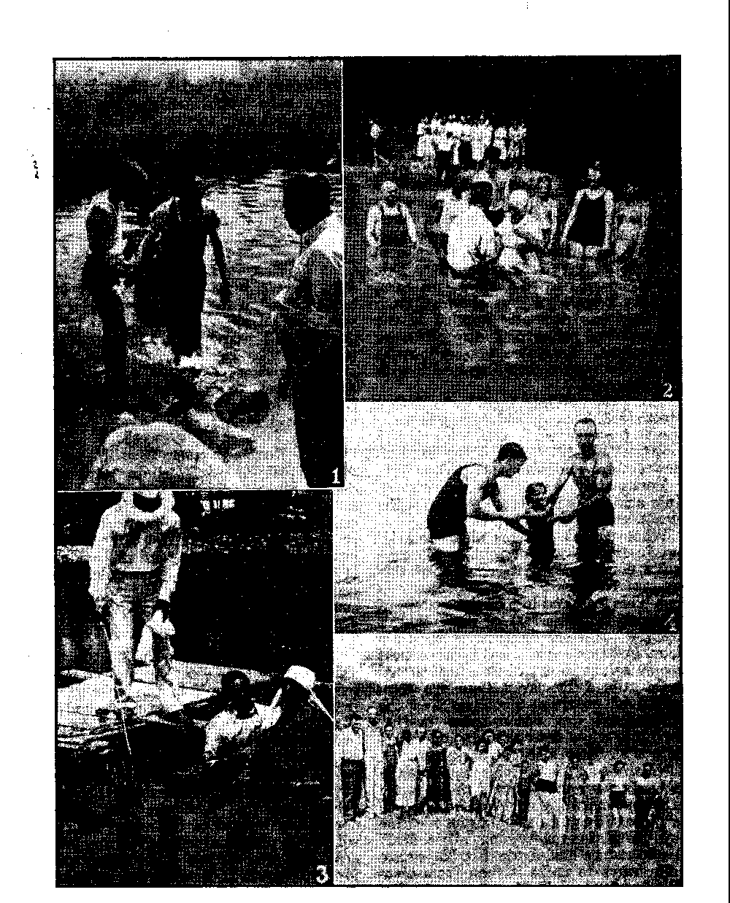

Prostrate Before Catholic Censor
Making Themselves at Home in France
"Thy Word Is Truth”
"Vain Repetitions, as the Heathen Do” 21
They Believed and Were Baptized
Presenting "This Gospel of the Kingdom”
35,000,000 Catholics in the United States
Published every other Wednesday by WATCHTOWER BIBLE AND TRACT SOCIETY, INC, 117 Adams St., Brooklyn 1, N. Y., U. S. A.
President N, H. Knorr
Secretary W, E. Van Amburgh
Editor Clayton J. Woodworth
Five Cent a Copy !1 a year In the United States JI.26 to Canada and all other countries
NOTICE TO SUBSCRIBERS Remittance: For your own safety, remit by postal or express money order. When coin or currency is lost In the ordinary mails, there is no redress. Remittances from countries other than those named below may be made to the Brooklyn office, but only by International postal money order.
Reoelpt of a new or renewal subscription will be acknowledged only when requested. Notice of Expiration is sent with the Journal one month before subscription expires. Please renew promptly to avoid loss of copies. Send change of address direct to us rather than to the post office. Your request should reach us at least two weeks before the date of Issue with which it is to take effect. Send your old as well as the new address. Copies will not be forwarded by the post office to your new address unless extra postage is provided by you.
Published also In Greek, Portuguese, Spanish, and Ukrainian.
OFFICES FOR OTHER COUNTRIES Enoland 34 Craven Terrace, London, W. 2
Australia 7 Beresford Road, Strathfleld, N. S. W. South Africa 623 Boston House. Cape Town
Mexico Calzada de Melchor Ocampo 71, Mexico, D. F. Brazil Caixa Postal 1319, Rio de Janeiro
Argentina Calle Honduras 5648-48, Buenos Aires
Sintered as second-class matter at Brooklyn, N. Y., under the Act of March 3, 1873,
Notanda
“The Wild West”
♦ We did not think of the great open plains, the beautiful, rolling hills, the winding streams with tangled growth as “wild”. Only to the white man was nature a “wilderness”; only to him was the land “infested” with .“wild” animals and “savage” people. To us it was tame. Earth was bountiful and we were surrounded with the blessings of the Great Mystery. Not until the hairy man from the East came and, with brutal frenzy, heaped injustices upon us and the families we loved, was it “wild” to us. When the very animals of the forest began fleeing from his approach, then it was that, for us, the “wild West” began. —Chief Standing Bear, of the Sioux Indians, in his biography. New York Times.
Four-Year-Old Jacqueline
♦ Four-year-old Jacqueline Clement, of New Orleans, was born prematurely, and in the early days of her life her weight dropped from 2 pounds 3½ ounces to less than 2 pounds. For eight weeks she lived in an incubator, swathed in gauze, bedded down in cotton, and kept in 97-degree heat. For a long time she was fed four drops of milk every two hours. Now she is 40 inches tall and weighs 34 pounds, and they don’t feed her with 'an eye-dropper any more either. Jacqueline likes this world now tiptop, and would like to stay here permanently. And maybe she will; and here is hoping she does.
Social Security for Crippled Youth
♦ Uncle Sam and the states go fifty-fifty in doing what they can for some 300,000 crippled children under the Social Security Act. It is a good work, bringing hope and cheer to the paralyzed, disfigured, burned, harelipped, and other unfortunates. In Germany, under arrangements now in effect there, most of these would be put to death.
“And in His name shall the nations hope.”—Matthew 12:21, A. R.V.
VolumoXXIV Brooklyn, N. Y-, Wednesday, September 15, 1943 Number 626
Censorship
THE ability of man to communicate his ideas to others has ever been the measure of his progress and enlightenment. In those sad instances recorded in the pages of history where freedom to communicate has been stifled and restricted, the invariable result has been that the people are afflicted and suffer under ignorance, superstition and religion. In bright contrast, those cases where man has been allowed freely to communicate with his neighbor are themselves an eloquent testimony in support of the necessity for keeping open the channels of communication. The arch enemy of this freedom of expression ever has been, and still is, the Roman Catholic Hierarchy. Records of history (themselves now “banned” and kept away from the public) show that in the early stages of the development of the printing press it was the open purpose of the Hierarchy to destroy this new invention that showed “horrifying” possibilities of causing enlightenment among the common people. They reasoned that when used by persons outside the Catholic priesthood it would surely result in a wave of “heresy”. Immediately presses began to be destroyed by mobs, while the printers themselves mysteriously disappeared.
...Ko. measures were deemed too brutal to put down this menace to Catholicism; for these were the dark days known as the “Inquisition”, when bodies of men and women were tortured on the racks, “heretics” burned at the stake, and entire towns massacred, all at the instance and under the direction of the Roman pontiff SEPTEMBER 15, 1943 at the Vatican. But, by the grace of Jehovah God, this movement did not succeed, and out of it grew the Reformation, bringing in the era of “Protestantism”. These sincere persons, whom the' Hierarchy labeled “heretics”, began to print Bibles in the popular languages and the light of truth began to dispel the darkness of the superstition and hate with which" the Roman clergy had enshrouded the people. This nettled the priesthood as nothing else ever had, and, in 1832, Pope Gregory XVI demonstrated his attitude concerning the matter in his encyclical letter sent to his “sheep” the world over:
“That pest, of all others most to be dreaded in a state, unbridled liberty of opinion . . . Hither tends that worst and never sufficiently to be exeerated and detested liberty of the press, for the diffusion of all manner of writings, which some so loudly contend for, and so actively promote.”
As it became obvious that she could not summarily obliterate by sheer force and brutality the spreading use of the printing press, other measures had to. be adopted. Pressure was at once applied to rulers and monarchs to license and censor the press, and to appoint the members of the Hierarchy as the head censors, thus accomplishing indirectly that which they had failed to accomplish directly. So powerful was their influence that even after England had broken away from the Roman Catholic domination, under the reign of Henry VIII, the institution of appointing the clergy as the censors of the press continued. The Licensing Act, adopted under the reign
» 3
of Queen Elizabeth and especially rigidly, enforced by the Court of the Star Chamber in 1586, provided that no one was permitted to print anything until if had been “seen and allowed” by the archbishop of Canterbury. A fierce and constant battle -was waged by the printers against this tyranny, but it was not until 1695 that they gained enough power to defeat the renewal of the law. ■
When the American colonies were established, the people were well acquainted with the evils of a controlled press, and accordingly, when they formed the United States government, they soon adopted into the fundamental law a “Bill of Rights” for the special protection of the liberty of American citizens to communicate with one another.
The passing of a century has not improved the philosophy of the Hierarchy, and today as the nation is straining every nerve in the global conflict, they have seized on the tension of political circumstances to renew their unholy campaign to throttle the freedom of the press by grabbing hold of the office of public censor.
Tn 1940, in the United States, the American Hierarchy declared a civil war against Jehovah’s witnesses, a Christian group of American citizens, and the accounts of brutal mobbings that followed have shocked every honest person in the country. Newspaper stories reporting the thousands of petty arrests over the country resulting from official interference with the work of Jehovah’s witnesses would fill a boxcar, while the major cases of importance carried to the highest courts of the land in defense of the “Four Freedoms” have filled the law journals of the nation. These records are mute and conclusive evidence of the determination of the Catholic church to stamp out by violence, where necessary, the liberty of communication, which freedom was considered of sufficient importance to be declared the basic objective of the “Atlantic Charter”. -
That the Hierarchy succeeded -by 4 •
“strong arm” measures to circumscribe the freedom of expression long enjoyed by Americans over the radio networks is now apparent to all beyond question, and programs frowned upon by the Hierarchy are banned from the broadcasting chains today.
Furthermore, the motion-picture industry is entirely prostrate at the feet of . the Catholic censor, who, openly sponsored by the Hierarchy, passes every foot of film that is released by Hollywood. (This is the probable reason for the mass of religious drivel that now crowds the theaters nation-wide.) Joseph Ignatius Breen, a Jesuit-schooled representative of the Vatican, filled the position of official movie censor. The Saturday Evening Post for December 24,1938, page 47, says of him:
. And when Joe finishes telling them [the producers], they’re told and there is no appeal. If they try to put anything into a picture that he doesn’t like, it will not get the Purity Seal and the company will be fined $25,000, and without the Purity Seal 98 percent of the theaters in America will not run the picture . . . Breen and his associates pass on nearly all original material before it is bought by the studios.... Finally the rough cut of the finished film is seen and criticized by Breen and his associates, and anything he objects to must be taken out. ... Joe Breen ... is warning the producers that they can play hide and seek with women’s clubs, Y.M.C.A.’s, Jews, Mormons, Quakers and any and all Protestants, but whatever they do, they are not to tangle with the Roman Catholic Church.
The motion-picture industry is presently involved in what may prove to be a costly struggle. According to Drew Pearson’s syndicated “Washington Merry-Go-Round” for January 13, 1943, published in the nation’s leading newspapers, Paramount has spent two million dollars producing a movie version of Ernest Hemingway’s book For Whom the Bell Tolls, but, says the column,
' CONSOLATION “Strenuous objections have been voiced to Paramount by the Francisco Franco Fascist government and it seems probable that the film will never reach the American public. . . . Nobody ever dreamed that Franco’s hand was that strong inside the U.S.A. But the State Department is for him; also the Rockefeller committee is not enthusiastic about the picture’s release. But, most important of all, the Vatican’s disapproval is the real reason why Tor Whom the Bell Tolls’ will probably not be shown.”
However, the latest move of the Hierarchy is probably the most daring of all her attempts to control communication. She is- now establishing herself as the censor of the United States mails and all printed matter produced in this country.
An expose appearing in the March 25, 1943, issue of Drew Pearson’s “Washington Merry-Go-Round” fits perfectly into the picture of the Hierarchy’s past attempts to throttle the free press. Her plan is to establish herself as censor of printed matter that is sent through the mails and then use her power as a club to censor out all printed matter that is offensive to Catholic doctrine. Without pulling any punches, the article states:
Efficient Postmaster General Frank Walker has got himself into a situation whereby certain zealots of the church to which he belongs have become unofficial censors of American magazines. And Frank is playing into their hands. :
The situation has gone so far that scores of American magazines, before going to press, send their manuscripts to the representative of Bishop John F. Noll, of the Catholic National Organization for Decent Literature, where they are examined.
The Post Office Department has the authority to revoke the second-class mailing privilege of all printed matter it deems to be dangerous to public health, morals or national safety, and in the past SEPTEMBER 15, 1943 this power has been sparingly used. As long as this power is thus used as intended and is kept free from religious or political pressure, it is plainly a legitimate exercise of governmental restriction. To perform this function, Postmaster General Walker has appointed for the Post Office Department a special three-man committee, whose task it is to examine the literature mailed under the second-class privilege and ban those deemed to be “unmailable”. According to Mr. Pearson, the personnel of the com- -mittee is “W. C. O’Brien, Catholic; John J. Gregory, Catholic; and Calvin W. Hassell, Episcopalian”.
Apparently, this Post Office committee’s principal function has degenerated into rubber-stamping the recommendations from the Catholic National Organization for Decent Literature, which organization has no official affiliar tion with any government department outside of the government located at Vatican City, Italy, and, of course, the organization dances to the tune piped by the little man wearing the triple crown, at that stronghold of Fascism. Ironically, the headquarters of the organization in Washington, D.C., is located in a sizable new building built especially for such activities, having a solid stone front with no windows, but in large letters engraved across the modern exterior is the single motto, “Ye are the light of the world.”
But the activities of the organization belie the motto. Fearing that the organization will put their publication on the banned list, editors of many magazines rush their manuscripts to the organization for their ‘holy stamp of benediction’, or “Purity Seal”. The material is then carefully censored and parts out of harmony with Catholic doctrine are deleted. The office goes into the most minute details in examining the manuscript. For instance, one editor was required to change the line “his lips pressed hers” to “his lips touched hers”.
A letter from the Washington office to Bishop Noll, in Indiana, quoted in Mr. Pearson’s column, shows how the system operates:
Your Excellency:
During the past week, Mr. Selinka, Counsel •for the Dell Publishing Co., brought to me a Revised dummy of Modern Romances Magazine. Since they made the changes which I suggested I have already written to your excellency that this magazine does not violate the code.
Mr. William H. Fawcett, accompanied by the new editorial director of their Confession magazine, Mr. William H. Lingel, called on me with the dummy of Romantic Story. I carefully read this dummy, made a few minor changes in it, but had to object to one of the stories. Mr. Lingel assured me that this story and the others I objected to would be changed.
I talked to Mr. Hassel, counsel in the solici-Ubr’s office of the Post Office Department. He told that the following magazines had been cited for hearings to show cause why their second-class mailing privileges should not be revoked. They are Special Detective Cases, Romantic Story, Crime Confession. I shall, of course, attend these hearings.
The Post Office Department is apparently trying to avoid as much publicity as possible with regard to these hearings because no news releases were sent out naming the magazines or. giving the dates and times of the hearings.
Most respectfully yours, [Signed] William Smith.
The postmaster general, who is also the head of the National Democratic Party as successor to James A. Farley, vigorously denied that the recommendation of his fellow churchmen had any influence on the decisions of his department ; but once again the facts speak for themselves. The N.O.D.L. Acolyte, the official organ of the organization, said recently: "Postmaster General Aids N.O.D.L. Campaign — The U.S. Post Office Department has recently revoked the second-class mailing privilege to certain magazines. The department is to be commended for its vigilance and efficiency in citing these magazines and in refusing to grant second-class mailing privileges to offensive publications.” On the long list of magazines which followed, all but two had just appeared on the Hierarchy’s “banned” list!
In the face of this fact, the “bishop” himself had the courage to make a public denial in the United States Congress two days after the expose appeared in the “Washington Merry-Go-Round” ’ The “bishop” had one of his political henchmen, a congressman from Indiana, read a long letter from the “bishop” to Congress. Without denying the suspicious circumstance of the nearly 100-percent similarity of the N.O.D.L. banned list of periodicals, the letter read: “It may not be out of place to remind you that the Federal Bureau of Investigation is just as sympathetic toward the National Organization for Decent Literature as is the United States Post Office Department. If it has not suppressed many very lewd periodicals it is only because it is not within its province to prosecute. It must leave that to the Federal Courts.”
The (fbishop” readily admits that the organization encourages publishers to submit their manuscripts for Catholic censorship, saying in his letter, “You leave the impression on the readers of your column that the Washington office of the National Organization for Decent Literature requires publishers to send dummies of forthcoming issues for examination, while the fact is that those publishers who submit dummies have themselves requested the privilege of doing so, because they claim they actually want stories containing incidents of illicit love to be inspected before going to press with them.”
Unless we are to conclude that the Hierarchy has become a recognized expert in the held of “illicit love” and a technical adviser for publishers of spiced romance stories, then the only reasonable answer is that the publishers have begun to realize that unless they do as the motion-picture producers have done
and submit themselves to the absolute control of the Roman Hierarchy, they will be put on the Catholic banned list, which, as past experience has ably demonstrated, means prompt loss of the mailing privilege by official Post Office action. Without the mailing privilege the magazine cannot be circulated and the press may just as well cease to run.
There is no reason for thinking that the Hierarchy will stop in its campaign of censorship when it has throttled the “lewd and salacious” magazines, but, having thus found a foothold in the departments of government itself, and constituted as the official censor, it will logically and undoubtedly attempt to push straight ahead to suppress and destroy all publications that carry matter not approved by the Roman “church”. If the Hierarchy succeeds in her attempt to blindfold the American congressmen to what she is doing in the departments of the American government by reading to them reassuring avowals of purity, then she will have accomplished her age-old purpose of making herself the custodian of all news, knowledge and information, rationing out such portions thereof as may suit her fancy, but, above all, to see that the people are kept on a strict diet of Vatican-prepared provender, served Roman style. This is precisely the same system that was nurtured by the old “Holy Roman Empire”, and now in its twentieth-century world campaign the Hierarchy is seeking to re-establish and revive this unholy system on a scale undreamed of by- the ancient popes.
In the totalitarian countries where this has been accomplished, the miseries of the people who are forced to live day by day on manufactured propaganda should serve as a lesson to the American people who are yet in position to stop this insidious encroachment on the fundamental liberties which they have steadfastly defended since the inception of democracy.
Making Themselves
THERE seems to be no danger of the French people’s getting lonely, now that they are under Nazi domination. The Nazis have such taking ways. For example, once again they have taken Alsace. Their real reason for taking it is that Alsace is so lovely. The idea is that if your neighbor has something that is nice, and he likes it, you go and take it away from him, because you like nice things yourself. That’s simple. Anybody ought to be able to understand a thing like that.
When the children of Alsace and Lorraine go to school, they study both French and German, from the time they are seven years old. Their studies are all carried on in both languages, and, as their parents may and probably do speak a third language, Alsatian, that gives the little folks plenty to think about. In the adjoining province of
SEPTEMBER 15, 1943
at Home in France
Lorraine, the language of the home is one of the German dialects. So here js one of the most beautiful spots in the world, inhabited by a peace-loving people, that habitually makes itself at home in four languages, and, as it is on the border between two great countries, it is in for trouble in a big way whenever a European war starts. Beautiful scenery, superb cooking, exquisite wines and alluring architecture all appeal to the Nazis, and so, not having any better excuse than that they wanted these provinces for themselves, they duly annexed them once more, the same as in 1871-1918.
As soon as the Nazi war lords had France in their power, the workers in the factories suddenly and inevitably found themselves busy, day and night, making things that would help their new masters become their permanent
7 ones. The famous French silk factories suddenly found . themselves weaving thousands of yards of the finest, toughest unweighted silk. That is not for gowns for the ladies. Bless you, no. The women of France will be in luck if they can get suits of overalls. This silk is for the ^making of parachutes, wherewith Adolf, the paper hanger, hopes to land his parachute troops in Britain. Also, the famous French cork cutters found themselves busy day and night making life belts. Somebody seems to have figured it out that if you intend to invade Britain by boat, it might be a good Thing to have a life preserver along.
All over Europe the production of war munitions for the Axis powers has been stepped up, and France, which was held back from an adequate output while the land was still a republic, is running her war plants day and night, to make sure that Adolf has enough weapons. The factory workers often slave twelve to fourteen hours a day, and a ten-hour working day is considered short.
The Big Business crowd is well pleased. All they are interested in is money. The Germans can print plenty of that, and the German bankers and industrialists are taking over one plant after another with surprising rapidity. Quite frequently, German directors are added to the boards of what were formerly competing companies. There is a German director on the board of the Bank of France. Writing on this subject, A. C. Cummings says, in the Vancouver Daily Province for November 9, 1942:
Now, through, the treachery of Laval and a section of French bankers and industrialists who preferred Hitler to Premier Blum and the Popular Front (which tried to nationalize the French armament plants), the whole of large-scale French industry has been harnessed to the Hun war chariot without much trouble beyond occasional sabotage.
There has been sabotage. Of course there has. But it is a dangerous business. The story was published of what took place in the Graff arms factories near Paris. The workers entered into a plot to steal each a quantity of greasy waste each day. At length, after a good-sized pile had been assembled in a far corner of the plant, it was set afire and all the workers ran to see the blaze. When the company police arrived the workers got in their way and seized their hose, pulling in different directions. Those not in the original mixup remained behind, hauled out their own waste piles, and soon had the entire plant ablaze. .
Of course, the Germans that were looking for munitions from the Graff plant (and scores of other plants treated similarly) were not going to stand for a thing like that. So they began to seize and shoot hostages. At Nantes 50 hostages were done to death, including old men, cripples, two women, and some that were hardly more than children. Just plain murder, and beastly murder at that; cowardly and contemptible beyond the reach of adjectives.
After a pause the head murderers at Paris, the so-called “German authorities”, announced that thereafter if a certain man is wanted, and if he is not betrayed to them within ten days, they will shoot his father, brothers, cousins, brothers-in-law, and even his grandfathers, set the women relatives at forced labor, and put the children in “approved” homes. Ever hear about the Inquisition ? That is it, 1943 style. Opportunity is provided for traitors to save their own hides temporarily by squealing on fellow workmen, and, sad to say, they have even helped to track them down, according to the United Press.
Those that operate the Inquisition get to enjoy the sufferings of their victims, and add to them in any way in their power. A unique way was found to execute French prisoners of war. This is
CONSOLATION
the way it was done: Several trainloads of Russian civilians 18 to 65 years of age were transported across Germany in freight cars, which were opened only twice a week for hygienic reasons, and to give the living something to eat. Out of 2,800 arrivals at one camp, the majority weighed from 90 to 100 pounds. In most of the cattle cars, holding fifty men each, thirty arrived dead. In camp they died at the rate of fifty a day for the first eight days, and at the rate of twenty a day thereafter. As soon as they died, the bodies were stripped and thrown out of the barracks. Here is where the French prisoners of war came in. It was their job to remove the bodies by truck and dump them into a common grave. As the French prisoners had no way of disinfecting themselves, typhus soon broke out. Of course, that meant wholesale annihilations.
It may be said, however, that, hard as is the lot of the French, it is not as hard as that of the Poles. The poor Polish prisoners receive nothing from their families. The reason for this is that their families have been deliberately broken up. The fathers are sent to one place, the mothers to another, and the children to a third. The family members have little hope of ever being able to find one another again. How vicious I
A.gentleman connected with the Unitarian Service Committee,' Howard L. Brooks, had the privilege of being in Unoccupied France for a period of six months in the year 1941 and has written a book on the subject, entitled “Prisoners of Hope”. In that book he tells of a visit which he personally made to a children’s concentration camp at Rivesaltes, where 4,000 little folks were being robbed of their freedom and growing up in filth, hunger and misery. He mentions one little girl, eight years of age, that he saw hanging on the edge of a garbage can. He says of her that “her feet were not touching the ground, and her head had disappeared over the top as she dug with pitiful eagerness into its depths”. She died of cholera a few days later.
You see. It is now or never for the Jesuits, There isn’t any price they would not make humanity pay, only that, at the end, the “whore” that they serve may have her final ride upon ‘the beast that was, and is not, and yet is, and shall again be present.’—Revelation 17: 8,11.
Even a year ago they were glad to get rats and poodles for food in Unoccupied France; and certainly conditions are no better now. Imprisonment for five or ten years and fines of 100,000 francs to 5,000,000 francs are prescribed for any persons who willfully permit food supplies to perish. So, in France, they are not plowing under any pigs. That pigplowing stunt seems quite a way back, does it not?
When the American armada landed in Algiers, and the Germans at once took over . Unoccupied France, the horrible conditions already existing in that unhappy land became immediately worse. In the three days preceding December 18, 1942, only three persons were permitted to enter France from Switzerland, and these were admitted only because they had diplomatic passports. In other -words, the country did not see how it was going to feed those that were already there, and so dreaded to admit others.
These and other tyrannies too numerous to mention have not made the “New Order” of Pacelli and Hitler popular with anybody that has either a heart or a brain. A good example of this was when Dr. Goebbels thought to frighten the Swiss by showing what happened to the Canadians when they landed at Dieppe. When the film went on at Zurich, the operator had to take it off and put on something else. The people of Zurich speak German, but they are Swiss. They whistled, cat-called and shouted “Shame”, “Filthy swine,” and “Show the stuff
somewhere else'’. If Hitler ever gets the chance, he will make the people of Zurich pay for that a thousandfold.
The French people are up against it ih terrible shape. They suffer from the British and American air raids, even though they consider them necessary. tThey hate the Italian government for * stabbing them in the back in their darkest hour. They hate Vatican City, which they rightly suspect to be at the bottom of all their troubles. Despite all the whitewash so constantly applied, many of them hate and distrust old Mr. Petain. The labor unions hate him because, while continuing them in existence., he has issued a decree providing for a prison term of five years and a fine of 10,000 francs for anyone attempting to engage in collective bargaining. What is the use of having a labor union if it cannot do one single thing to improve the condition of its members or to seek redress of grievances ? The French are fair-minded and they hate any government that is so pitiless as to cause human creatures (50 or 60 Jews) to deliberately hang themselves en masse when they found they could not escape from the country into Switzerland. This took place at Sete, a coastal city of southeastern France. Not a single Jew remained alive.
It is openly proclaimed that the French have only two choices. They must be either “collaborationists” or “terrorists”. A “terrorist”, it is explained, is one that does not work hand in hand with the “New Order” of Pacelli and Hitler. No attention is paid to the wishes of the French people to be free to choose their own form of government. When did the Roman Catholic Hierarchy ever encourage the people to have a voice in anything?
There are some rewards to those who go over to the “collaborationists”. Whether the‘ facts are correct or not is not known, but German sources claim that a French worker who goes to Ger. 10
many can send back home up to $85 a month if he is married, and two-thirds as much if he is single. Consider what an inducement that is when living is so high. What do the people do that have no incomes? They starve.
The “terrorists”, so called, if they have any hopes of deliverance, have them in the activities of Britain and America. An instance of these activities was the British raid on the submarine base at St. Nazaire, France. The main object of the attack was to make unusable the large dry dock, the only one on the French Atlantic coast capable of accommodating so large a ship as, for example, the German battleship Tirpitz. This dock is the only one outside of Germany, Genoa and Singapore capable of taking the Tirpitz. It was built for the Normandie. A British raid put it out of commission for a year.
The story of the raid makes a thrilling tale. The British came at midnight and rammed the destroyer Campbelltown into the dock gate. The ship was then deserted and the commandos attempted their get-away to Britain. Two of the British officers were caught by the Germans, who asked if the ship contained explosives. The answer was that it did not. To test their good faith, the Germans asked them if they would accompany a party which was going to inspect the destroyer. They immediately agreed and accompanied a party of high German naval officers on board. No sooner were they on board, than the Campbelltown and the dock gate blew up and the two British officers and all the Germans who were aboard were instantly killed. Fighting then broke out between the Germans and the French and such commandos as could not get away. This fighting lasted for three and a half days. Though the French must have known that without weapons and without officers to lead them they could only be slain by their well-armed and well-officered lords and masters, to die rather than yield to the hated Nazis, their visitors
CONSOLATION
from Deutschland Ueber Alles, now making themselves so much at home in France, was preferable.
France’s only hope is not in the brave British spies who have done such thrilling things. Some who speak French and German fluently have waylaid German soldiers and officers and stolen their uniforms. They have joined German regiments as Germans without their identity being discovered. In one instance a British officer disguised as a German officer marched a large detachment of German troops out on the parade ground at Lorient just in time to get them' machine-gunned by British aviators. Of course, if they get caught, they die. But one has to be willing to die today if one wishes to accomplish anything worth while.
It may be that there are some French Fascists that think it worth while to betray their countrymen into the hands of Pacelli and Hitler, and are willing to die even in such an abominable cause. Before the present war, a company of them raided a police barracks at Dieppe and escaped with twenty rifles. The rifles were found in possession of a Fascist shopkeeper. The case went to a Fascist magistrate, who refused to act. This was while the Fascists were getting ready for the great betrayal actually pulled off in the spring of 1940. When the war broke out, the chateaux of Gaille Fontaine, near Dieppe, was a huge arsenal all ready for the use of Hitler, Pacelli and those in on their rotten deal, for earth’s domination.
France’s only hope and earth’s only hope is in none of the things that, have been named, but it is in The Theocracy; and in these trying hours some of the French people cannot fail to remember some of the things that they have heard at the hands of Jehovah’s witnesses. In October, 1934, the members of the jury of the Paris exhibition of Modern Comfort were so impressed with the richness of the revelations contained in the Watchtower publications and were so anxious to do justice to the work of moral sanitation undertaken by this philanthropic society that they awarded them the beautiful diploma, The Diplome de Hors Concours, which means that this work is above competition and in a class by itself. When the old "whore” goes to her eternal destruction in Armageddon there will be some Frenchmen and some of their unwelcome visitors from the East that will know that there is a God in heaven unmatched in any way by the god of Pacelli and Hitler, the “god of this world”, the Devil, the prince of darkness.
Slaves of the
ONLY by luring or forcibly drafting between four and five million workers into his war factories has Hitler been able to maintain German war production for the fourth winter of war in Europe. He has had to make good his enormous losses on the Russian front.
A year ago Nazi propaganda was explaining how when Russia was “annihilated” all Europe would be organized by the Germans into one great region of economic “collaboration”. There would be assured trade and markets for all; of SEPTEMBER 18,1943
Herrenvolk
course under Nazi control. Big industrial leaders, especially among the French, swallowed these specious promises.
Today this make-believe has been dropped. Now it is openly admitted in Germany that the war is one for loot and lordship and that the “herrenvolk” are to be the bosses of the continent whatever happens.
What it means to be the slaves of these bosses is told by some of those who have escaped recently. Enticed by handsome promises of good pay and good
food from their own starving and looted countries, they have spent six months or a year in Germany. When, as in the case of neutrals (Swedes and Portuguese, for instance), they have returned home, this is what they tell, according to reliable evidence reaching London:
i The Germans first lure them with flittering promises of high wages, good quarters and good food. If, as in France and Belgium, this does not bring the workers,-the factories are forcibly closed and the idle employees again offered jobs in Germany. In Yugoslavia, Greece, Poland, and Czechoslovakia, workmen and workwomen are offered nothing. They are forcibly abducted and placed in Nazi factories, particularly in those the Royal Air Force is likely to bomb.
When a batch of volunteers for Germany leaves France, as some thousands have done, in search of work and food, they find themselves herded like cattle into trains. Their baggage is taken from them and is usually “missing” after customs inspection at the German frontier. Once inside Germany the Nazi guards throw off the mask of politeness and order the new arrivals about as roughly as if they were dogs. Anyone protesting is promptly arrested.
“Homes”, and “hostels” turn out to be dirty barracks. Food is inferior and ill-served. Washing is almost impossible, as there is no soap in Germany—only substitutes. If disillusioned poor folk repudiate their contracts of employment and try to return to their own countries, they find themselves unable to use the German money given them without special permission from the banks.
To keep order the Nazis employ blackguards, some with a criminal record. Over each group of workers in a factory is a spy-overseer, who imposes a fine for every small breach of the rules or error in workmanship. Husbands and wives, despite Nazi pledges to the contrary, are separated and the men sent to the Rhineland, where they run the risk of death by bombing.
German workers in a factory where foreigners are employed take care that the heaviest and dirtiest work is put upon them. Only the Germans who hate Hitler—and they are more numerous than is generally believed—behave decently to the newcomers. They explain how greatly they have suffered in food shortages, long hours of work, service in the army, loss of relatives by death in battle or in the bombed cities; and how they long for the war to end. But the spies are everywhere and they can do nothing.
A 10-hour working day is the rule in all factories. Holidays are impossible, as there is no transport. On rest days there is only the dirty barracks peopled by all the nationalities of Europe. Everyone fears to say what he thinks.
"To get out of Germany today,” says a returned Portuguese worker, "is like getting out of hell. It is better to kill oneself than to return there.”—A. C. Cummings, in Vancouver Daily Province, Nov. 23, 1942.
Look! Look! Look!
To the Editor [of Look]:
Generally speaking, one can always answer articles in your magazine that one disagrees with, and get by with it. In the past you have done a lot of good work for which you should be commended, such as attacking the Nazi spies, 12
and showing them up long before the war, and also showing up “Father Coughlin” to be the Jew-baiter and racketeer that he is, though I’ve wondered sometimes if a doubt ever came into your mind as to why the pope had never kicked the “Father" out of office, since it is a well-known fact even among
CONSOLATION
Catholics that his activities were not aboveboard.
However, after reading your article “Hitler's War against the Catholic Church”,1 I just have to let off some steam. Surely you don't believe all that, even though you print it. After all, you have access to a lot more information than most of us. Or do you see what’s coming and want to save your skin? Only you can answer that. But have some regard for the people and don't keep them in the dark. After all, news is for the interest, convenience, and necessity of the public.
Did you know that in 1940 several Catholic bishops in Chicago sent a letter to, the pope asking that he excommunicate Hitler, and that the said letter was ignored? Would the apostles have kept Judas in their midst after he betrayed Jesus? Even Liberty magazine once brought out that Hitler was a Catholic. In the Philadelphia Record I read an article by Fritz Thyssen (the Catholic who helped to put Hitler in power and later got kicked out for his trouble) in which he said: “Hitler, a born Catholic, was an admirer of the political sagacity of the Catholic Church, if we are to believe Mein Kampf. At the beginning of the regime, he endeavored to reach an agreement with the Church. He concluded a concordat with the Vatican. In this Vice-Chancellor von Papen was the moving spirit. The concordat was the first treaty concluded by the new regime,'-' A further quotation from the same article: “Germany’s new status will not be a mere reversion to the past. It will not mean a return to a sort of German federation or ‘Holy Roman Empire’ composed of tiny principalities. I can see but one solution: namely, that Catholic Germany should become a Catholic monarchy." ■ - ■
From the New York Journal American, of Monday, June 9, 1941, I quote: “Rome, June 9—(UP). An editorial in the Turin newspaper Stampa said today Germany and Italy are organizing a new European Order in conformity with the principles laid down in the Encyclical Rerum Novarum, to which Pope Pius called attention in his June 1st speech. Postwar Europe, the editorial said, will be a group of states whose national sentiments will be subordinated to a Greater Europe. The new order already is being placed in operation, it added.”
From the Philadelphia Daily News an article by James Chambers, dated from London, Dec. 1, 1942 (UP), is headlined as follows: “Nazis Woo Aid of Pope to Hold Italy in Line.” Also, from an article in the Philadelphia Record by Pierre Lazareff and Waverley Root, I quote the following: “Mussolini’s last straw of hope is the Vatican. He has been carrying on negotiations with the Holy See to use its moral influence with the Italian people to preserve the regime if its existence should be threatened by an unfavorable continuation of the war. Those negotiations are reported nearly concluded.”
Also, the (AP) of March 13, 1942, headlined, an article from Washington as follows: “The State Department has disclosed that it has made representations to the Vatican objecting to the establishment of relations between Japan and the Holy See, asked by Japan. A spokesman said the department’s communication was to inform the Vatican that this country’s attitude to such relations would be unfavorable and that they would be regarded with suspicion because Japan had no interest in Catholicism. The State Department believed that such a move was made solely to stir up trouble.” .
At the time it happened it was in the newspapers where a Bishop Tiso personally went to see Hitler to hand over Slovakia to Germany. Bishop Tiso is now the premier of said country and is .still a bishop of the Roman Catholic
Church. No wonder the Hierarchy has to print smokescreen articles such as the one in your magazine, or the people over here will get wise to the fact that they really love the dictator type of govern. ment as was stated in the Associated Press article of July 18,1940, (from the the Philadelphia Record) “Vatican’s At-4 titude Pleases Germany — Statement
Called Favorable Toward Totalitarian Rule. Vatican City, July 18 (AP). Praise in the Vatican newspaper Osservatore Romano recently for ‘Good Marshal’ Henri Philippe Petain, chief of the new French State, attracted the attention of diplomats here in view of the Vatican’s previous attitude toward totalitarian regimes. Authorities decline to comment on the newspaper’s observations [they always refuse to clarify things simply] which included a statement that the ‘principle of authority’ is higher than the human will,” (And here I add that this means you must obey the orders of the Hierarchy whether you want to or not.) To further quote from the same article: “German foreign office circles expressed marked satisfaction today over what they regarded as a complete about-face by the Vatican in its position toward totalitarian states.”
Here’s a wireless printed in the New York Times from Berne, Switzerland, Oct. 5,1942: “Emanuel Cardinal Suhard, Archbishop of Paris, issued in the name of the Church yesterday an appeal to the people to support with frank and complete loyalty the government of Henri Philippe Petain. The Archbishop of Toulouse in a statement reaffirms his loyalty to Marshal Petain.” As most everyone now knows, Petain, Laval and others had already cooked up a deal to sell France down the river, and this is supported by many columnists such as Drew Pearson, Robert S. Allen, H. R. Knickerbocker and others. I could here give many quotations from their articles which I have before me, but it seems that it should be such a well-known fact
by now that it would be useless to state it over and over again. - ': .
The Associated Press headlines an article from Dublin, Eire, September 27, 1942, as follows; “Cardinal Assails Allied Troops in Northern Ireland.” “The partition of Ireland,” he said, “was a flagrant and intolerable injustice against Catholics doomed to live under the narrow and unjust domination of the Belfast Parliament and executive.”
I even have one picture from your magazine (I don’t know which issue) with these words under the picture of a German church in Brazil: “Propaganda from the pulpits of German churches in Brazil reached such a height that authorities forbade sermons in German. Knowing. that priests and pastors had the respect or the people, Hitler’s agents won many of them with free visits to the Fatherland.” ■
From Havana, Cuba, November 10, 1942, the (UP) reports the execution or a Nazi spy there and states; “As he crossed the firing line Luning kissed a cross held up by one of the priests and was embraced by the priest, Father Angel Reyes.”
The (AP) of December 15, 1942, reported from Detroit that “Father Glighaerie Moraru and Father Stephan Opreanu, Rumanian Orthodox priests, indicted by a federal grand jury last month on charges they refused to register as agents of a foreign power, were released on bonds of $10,000 each today.”
Philadelphia Record—New York Times Foreign Service—reports an interesting item from Rome, June 16, 1940, part of which I here quote: "Monsignor Carlo Margotti, Archbishop of Gorizia, in a pastoral letter today urged the Italian people and clergy to obey and trust Premier Mussolini in the war which he is waging for the welfare of the Italian people.” So far the letter has not appeared in Osservatore Romano, the official Vatican newspaper. .(This in ease the winds don’t blow favorably; then they can always go the other way.) The
archbishop is quoted as urging all Italians “to lift our reverent thoughts to the [then] ever victorious King and Emperor and to the [then] undefeated Duce, to whom we have entrusted the fate of our armies and of the whole nation—may God always bless and protect them”.
Here's just one more from the Philadelphia Record, Tuesday, September 17, 1940: "Vatican City, Sept. 16.—D.N.B., official Nazi news agency, announced Aug. 27th that a pledge of loyalty to Adolf Hitler adopted by the Catholic bishops at Fulda would be read from the pulpits after the war." (DNB claimed the pledge would say that the Church in Germany was “indebted to German troops for the [then] victorious advance, and that without the successful warding off of enemy invasion by German Armed Forces German Catholics could not have pursued so quietly and undisturbed their church work and ministerial duties". At the head of the article you see the same old dope, as follows: “The letter was submitted to the Vatican for approval last month. Very little has leaked out about the Conference because of the Vatican’s reticence in disclosing information, and there is still great curiosity in German Catholic circles. It is believed the Vatican has refused to sanction the releasing of the letter because of the war, [Not knowing for sure that totalitarianism would win, in other words.] It was pointed out the Holy See thought it was better to avoid any official pronouncement until the end of the war, which will, presumably, permit the Vatican to ascertain what will be the attitude of the German Government toward Catholicism in general and German Catholics in particular.”
Of course, Mr. Editor, you couldn’t print this letter. [Nor did he.—Editor of Consolation] If you did, you would no longer have a Look magazine; and that in itself is proof of the fact that there SEPTEMBER 16, 1943 is no freedom of the press when the Hierarchy is involved, and the subject immediately becomes controversial when a taboo, like disagreeing with them, comes up. Yet all the statements quoted herein are from mostly Catholic-owned papers and by Catholics,—articles that have slipped through from time to time. None of the quotations are my own. It is to refute these slip-ups that articles such as the one now appearing in Look have come out.
All this is proof of the fact that the truth is at the bottom; for no organization minds in the least being attacked when they know it can be refuted.
Recently the Federal Council of Churches got up enough courage to register a weak protest that in all the talks about “Peace with Justice” after the war they were left more or less out of the picture (as they have been for years).
Look at the movies, you’ll find a fat priest trying to look sanctimonious in every one of them. One has only to read history, or an encyclopedia, to find out that their appearance is only a cloak.
As to the persecution of the Jews, Hitler only copied the Hierarchy. For example, Pope Innocent III, and Pius V, both decreed that the Jews should be expelled out of their midst and Christians shouldn’t marry them; also, they should be marked with certain signs, etc.
For years Jehovah’s witnesses have been telling the people these things, showing religion to be the racket that it is, and that God’s Kingdom is the only real hope of the people.—Daniel 2: 44.
Your magazine, along with hundreds of others, has assailed them and painted them as rabid fanatics, etc., because they have courage enough to tell the truth and take the consequences; which very few editors and newspapers do, because of being afraid of the powerful Hierarchy. Remember that Jesus was killed by religionists because He exposed them.—H. L. Stamps, Pennsylvania. [Written January 1, 1943]
t ■ ■
i
Why Must the Perfect One Die?
THE Son of God, on earth as a perfect
Man, died, being “the Lamb of God which taketh away the sin of the world”. (John 1:29) In the eyes of those that stood by at the death scene He died as a sinner, nailed to a tree between thieves, under the charge of disloyalty to the worldly political powers, yet wholly innocent, harmless, and without sin. (Hebrews 7:26) Yet, thereby, He fulfilled what the prophet of God had foretold of Him long in advance, in that He “poured out his. soul unto death: and he was numbered with the transgressors; and he bare the sin of many.”—Isaiah 53:12.
Why should the great, the good, the pure, the sinless Man die in such an ignominious manner as this? Was there no other means whereby man could gain life ? Sacred Scripture answers that there is no other way whereby man could get life. Due to his sin divine justice demanded the life of the perfect man Adam and took that life. Divine justice could receive nothing as a substitute for the sacrificed perfect human life except the life of a perfect human creature. Adam was sentenced to destruction because he was a willful sinner and rebelled against God. The one who would redeem the life right which Adam lost for all his offspring must die, without sin though appearing as a sinner. All this Jesus did, at Calvary.
It is important to examine this reason for Jesus’ coming to earth, growing to manhood’s estate, and dying. Speaking the words of Jesus beforehand, the psalmist-prophet said: “Lo, I come: in the volume of the book it is written of me, I delight to do thy will, O my God: yea, thy law is within my heart,” (Psalm 40: 7, 8; Hebrews 10: 7-10) Thus we see He came to do God’s will, the primary part of which was to vindicate Jehovah’s name; and the secondary part, to redeem obedient humankind. There-, fore Jesus said: “I am come that they might have life, and that they might have it more abundantly.”—John 10:10.
Speaking concerning His church of spiritual Israelites, Jesus likened His humanity to bread. He said: “I am that bread of life. This is the bread which cometh down from heaven, that a man may eat thereof, and not die. For my flesh is meat indeed, and my blood is drink indeed. As the living Father hath sent me, and I live by the Father; so he that eateth me, even he shall live by me.” (John 6: 48, 50, 55, 57) By this we understand that Jesus gave up His human life in order that the value thereof might be presented to divine justice in heaven as the great ransom price. To eat means to partake of food to satisfy hunger and live. He who hungers for righteousness and partakes of the value of Jesus’ sacrifice by believing on the Lord Jesus Christ and doing the Father’s will, that one will gain-life and will thus satisfy his hunger. The apostle Paul makes it clear that Jesus’ death was for the benefit of all believing and obedient men, when he wrote: “The man Christ Jesus . . . gave himself a ransom for all, to be testified in due time.” “Jesus ... by the grace of God should taste death for every man.”—1 Timothy 2: 5, 6; Hebrews 2:9.
“Sin is the transgression of the law.” (1 John 3: 4) “The wages of sin is death.” (Romans 6: 23) Adam transgressed the divine law, and this penalty of death came upon him, and all his offspring were born under condemnation and without right to life. Jesus the perfect Man permitted His life to be taken that it might be used to redeem for the believing and obedient ones of Adam’s offspring the forfeited life-right, that they might
have a full opportunity to acquire eternal life. Hence His perfect human life was made an offering' for sin, or a sin-offering- .
Many centuries ago Jehovah God foreshadowed this great transaction, and this adds to the importance of it. In fact, without the sacrifice of Jesus it would have been impossible for any of the human race ever to live at all. Looking back, then, at the typical picture of Israel’s yearly atonement day described at Leviticus, chapter 16, we see that the bullock and the Lord’s goat slain on that day of sacrifice pictured Jesus the perfect man at the age of thirty years when He was baptized. That day the area of the court surrounding the tabernacle or temple pictured the condition of perfect humanity acceptable to God. Therefore the bullock and the Lord’s goat slain in the court foreshadowed or pictured the fact that the perfect man Jesus died on earth in that condition as a perfect man. By His death He provided the ransom price. He did this to carry out His Father Jehovah’s purpose. •'
After the bullock was slain its blood was put into a vessel and the high priest carried it therein into the inner sanctuary, or Most Holy, of the tabernacle, where it was sprinkled before the mercy seat of the sacred ark of the covenant. The same thing was done later with the blood of the Lord’s goat. The high priest’s appearance with the blood in the Most Holy pictures Christ Jesus the High Priest, resurrected to life divine, appearing in heaven itself in the presence of God, there to present the merit of His sacrifice as the sin-offering on behalf of humankind.—Hebrews 9: 24.
The Scriptures clearly show that Jesus is the antitypical bullock for His church and the antitypical Lord’s goat for believing humans who receive life on earth under God’s kingdom. “Christ died for our sins according to the scriptures.” He “gave himself for our sins, that he might deliver us from this present evil world, according to the Will SEPTEMBER 15, 1943 of God and our Father”. God “hath made him to be sin [a sin-offering] for us, who knew no sin that we might be made the righteousness of God in him.”—1 Corinthians 15: 3; Galatians 1:4; 2 Corinthians 5: 21; Romans 8:3.
The law and its ceremonies that' God gave to the Israelites merely foreshadowed what great things Christ Jesus would do.—Hebrews 10:1 ; 8: 5.
Back there in the type, the slaying of the bullock and Lord’s goat and the carrying of their blood into the Most Holy as a sin-offering foreshadowed the fact that the remission of humankind’s sins could be accomplished only through the blood of the perfect sacrifice. “Without shedding of blood is no remission [of sins]. It was therefore necessary that the patterns of things in the heavens should be purified with [blood of] these; ‘ but the heavenly things themselves wdth better sacrifices than these.” (Hebrews 9: 22, 23) The patterns here referred to are the tabernacle, w’hich pictured the heavenly condition; and the high priest’s entrance into the Most Holy thereof with the victims’ blood pictured Christ Jesus entering heaven above. “For Christ is not entered into the holy places made with hands, which are the figures of the true; but into heaven itself, now to appear in the presence of God for us.” —Hebrews 9:24.
When Jesus died at Calvary He provided the sin-offering or ransom price, because His was the death of a perfect . human exactly corresponding with the perfect humanity of Adam. Adam’s death, how’ever, w’as the result of a forfeited right to live. Jesus’ death was a sacrifice. Adam became a sinner and died such. Jesus remained perfect, holy, and w’ithout sin; and while He died on the tree, yet by His death He did not forfeit the right to live as a human creature. By dying He reduced His perfect human life to an asset that might thereafter, be presented to God to be used to release believing and faithful humans from the death due to Adam.
t)id Jesus Mean What He Said?
And when thon prayest, thou shalt not be as the hypocrites are; for they love to pray standing in the synagogues and in the comers of the streets, that they may be seen of men. Verily I say unto you, They have their reward [gratified vanity]. But thou, when thou prayest, epter into thy closet, and when thou hast shut thy door, . pray to thy Father which is in secret; and thy Father which seeth in secret shall
t reward thee openly. But when ye pray, use not vain repetitions, as the heathen do.
—Matthew 6: 5-7.
IN VIEW of the above statements of
Jesus Christ, the Son of Almighty God, what would you think of the information that in an American city one of the most prominent ecclesiastics in the whole world used an altar 102 feet long by 54 feet wide and 53 feet high, and that in the same city a priest made the sign of the cross 51- times at one performance!
It all took place in Philadelphia. The big altar was used by Cardinal Dennis Dougherty, and the prayers and other performances therewith were public and were intended to be seen of men, and were seen by them, and Dennis did get his reward; for the whole story was published in the Philadelphia Evening Bulletin, which also carried the story about the priest making the sign of the cross 51 times and thus insulting Almighty God by making the vain repetitions which Jesus said are so objectionable.
Jesus said that He came not to do His own will, “but the will of him that sent me” (John 6:38); and, further, that “he that honoureth not the Son honoureth not Hie Father which hath sent him”. (John 5:23) Just who, then, do you think was honored by that immense altar and by those 51 vain repetitions of the sign of the cross, since both were acts of disobedience to the Most High! You don’t have to answer the question. Just go ahead and do as you like. This is a free country in which every man may choose his own god, either Jehovah, the true God, or Satan, the false one. But no man can serve both of these two masters. Sometime he must make a definite and a final choice.
In order to spreadeagle themselves in the public eye, and for no other conceivable reason, the Roman Catholic Hierarchy is forever staging what they call “eucharistie congresses”. They had such a one at St. Paul not so long ago. The ostensible object of these congresses is to worship a little piece of bread. Advance notices informed the world that there would be 450,000 present This gradually shrank to 250,000, then to 125,000 and finally to 80,000, depending upon the zeal of the reporter. Some reporters can see double much more quickly than others.
The St. Paul Dispatch, when the reporters had got the attendance down to a mere 95,000 (30,000 in the grandstand and 65,000 in the field), said that the “huge altar with its 53-foot canopy” “presented a thrilling sight”. If you don’t remember where either Jesus or any of the apostles pontificated under a 53-foot canopy, don’t mar the harmony of things by mentioning it. .
On the last day of the congress the seminarians were there in cassock and cotta; the Dominicans, in cream-colored habits and black capes; Franciscans, in course brown wool; Diocesans, in black cassocks and white linen surplices; choristers, with purple pompoms and black birettas; Cardinal Dougherty, in scarlet robes; and others dressed to kill. Jesus and the apostles never even had the faintest idea of such monkeyshines.
There was no evidence of God’s blessing; not the least. The pope started to speak, and “hardly had he finished when a sudden rain squall drenched the waiting marchers and the thousands who had gathered to watch them”. The rain turned “the fields about the Eucharistic Temple into a sea of mud that sadly bedraggled the costumes of the marchers”. It wasn’t long before “the combination of a deluge from above, incredibly sticky and slippery mud underfoot, traffic jams and darkness began .to engulf the great throng”. “Hundreds tried to find shelter in trees or shrubbery. Newspapers and other headcoverings were at a premium. Girls in shorts-and-skirts outfits divested themselves of the skirts, which they put over their heads and shoulders.” The newspaper stories went cheerily on:
Three young priests stationed at the Throne of Exposition, clad in cassocks, were drenched to the skin. Boys near by crawled under the wood structure on which the Throne was mounted.
Chief of Police Hackert picked up an aged, retired monsignor who was waiting to view the parade with a young girl escort, loaded the two into his auto, and drove them to a first aid tent for shelter. While he had stopped to do this, a young man crawled under his auto on the pavement for shelter, only to have the car drive off from over him.
Women who sat on curbstones raised umbrellas, remained seated until freshets of water rushed down gutters, covering their feet to the ankles.
Two beautiful evening dresses of pale green crepe, sweeping the ground, worn by young women escorting a children’s marching section from St. Andrew’s church in St. Paul, were. ruined by the rain and the ankle-deep mud of the Fair Grounds track.
Now it’s after 6 p.m. A Boy Scout says he’s hungry. There’s the canopy over the Blessed Sacrament. It’s raining again, harder. Priests, monsignors, religiously turn into the main aisle. The, Blessed Sacrament passes. Dark skies have loosed a downpour. Near us, marchers kneel in the mud. Umbrellas have sprouted everywhere. Final benediction ends quickly. The Papal Legate leaves the altar under a white parasol. Water drops in sheets. Young women remove shoes and stockings, slide across the track. Exit gates are jammed with streaming faces and clothes ready for the wringer. A priest remarks, “This is worse than the 1926 International Congress in Chicago [remembered by its drenching at Mundelein, Hl.]” The temperature has dropped. There’s a rush for eating booths and hot coffee. There’s no hot coffee. The rain waterlogged hats. Two barrels of discarded ones were picked up in Como park alone Friday.
It took the curl out of freshly fixed hair; it took the press out of thousands of pairs of trousers; it wrecked hundreds of pairs of comparatively new white shoes; it gave silk stockings the works; white coats came out a mess and the rayon slip situation resulted in both discomfort and embarrassment. Rayon slips have a certain amount of metal in their texture. When water hits them they grow long. Women in the parade as well as those along the line of march found their rayon slips growing longer; their cotton dress skirts shorter. The result was anything but smart looking.
The Vatican is the center of all this, and much else to follow, and the pope feels very much impressed with his job. This is how he put it in his Christinas (1941) broadcast published, in the New York Times (one can almost hear him patting himself on the back):
O Christian Rome, that blood is your life. By reason of that blood you are great, and even the ancient ruins of your pagan greatness are seen in a new light and the codices of the juridical wisdom of the praetors and the Caesars are purified and consecrated. You are the mother of higher and more human justice which does honor to you, to your See, and to those who hear your voice. You are the beacon of civilization and civilised [sic] Europe and the world owes to you all that is most wise and. most honorable. In- the exalted tradition and proud history of their peoples, you are the mother of charity. Your
splendor, your monuments, your hospices, your monasteries, your convents, your heroes and your heroines, your voyages and your missions, your generations and your centuries, ' "with their schools and universities, all bear testimony to the triumphs of your charity, _ that charity which embraces all, suffers all, that hopes for all, becoming all things to all men, * consoling and comforting all, curing all and recalling them to that liberty given them by Christ, uniting all peoples in the peace of brotherly love [sic], that charity which brings together all men, regardless of country, language or custom, into one united family and makes of the entire world one common father-: land.
That sounds pretty good to a man who doesn’t know any history, or who doesn’t know much about anything, but it is comical when viewed in the light of the well-known facts. The first president of ■ the University of California, Horace Bushnell, visited Rome a century ago, when it was a part of the Papal States, governed directly by the pope, and, in an open letter to the pope, charged that it was the worst-governed city in the entire world. That lets the air out of the tire.
The pope implies that he is much impressed by the church industry in “Christian Rome”. He should be. That is his line of business. There are in the city 441 churches, 212 chapels, and 77 oratorios. This could mean either that the city is a very bad city and needs many churches to keep down the odor of wickedness or else that it is a very lovely city and is kept so because one cannot see a hundred feet in any direction without seeing a steeple, and cannot look out of the window without seeing a flock of priests, nuns and others in the same business as is the pope himself. The center of the business is, of course, the Vatican. There the papal audience halls are 300 feet long, and the pope gets his exercise by walking among the people who kneel in zigzag formation so -that
they can kiss his feet as he goes,by. Afterwards he talks to the pilgrims, oftentimes in their own tongue, as he is able to speak six languages. .
You will wonder what must be the effect of so many great churches all in one relatively small city. This is truthfully set out by the father of telegraphy, Samuel F. B. Morse, in his Letters and Journals, published in 1831. What he says of Italy as a whole wTas doubly true of “Christian Rome”:
In passing through the country you may not take notice of a pretty child, or seem pleased with it: so soon as you do the mother will instantly importune you for a “qualehe cosa” for the child. Neither can you ask for a cup of cold water at a cottage door, nor ask the way to the next village, nor even make the slightest inquiry of a peasant on any subject, but the result will be “qualehe cosa, signore”. The first act which a child is taught in Italy is to hold out its hand to beg. Children too young to speak I have seen holding out their hands for that purpose, and so mechanical is this action that I have seen, in one instance, a boy of nine years nodding in his sleep, and yet at regular intervals extending his hand to beg. Begging is here no disgrace: on the contrary, it is made respectable by the customs of the Church.
But the Word of God, which Jesus came to proclaim, illuminates this whole abominable begging industry when it says, “I have been young, and now am old; yet have I not seen the righteous forsaken, nor his seed begging bread.” —Psalm 37:25.
Mary was a good woman, greatly honored of the Lord. She was a suitable vehicle for bringing the Logos into the world. She played her part well, and it is confidently believed that she made her calling and election sure and is a part of the body of Christ, one of the 144,001 chosen company that alone, of all human creatures, will ever have the heavenly salvation. But when, at the marriage in
Cana, Mary came to Jesus and said, “They have no wine,” Jesus said to her, “Woman, what have I to do with thee! mine hour is not yet come.” (John 2:3,4) This was to tell her plainly not to be presumptuous in making requests or laying out programs. She was to follow, 'iot to lead. Elsewhere He conveyed the same thought, when He asked, “Who is my mother?” (Matthew 12:48-50) and answered the question pointedly, that “whosoever shall do the will of my Father which is in heaven, the same is my brother, and sister, and mother".
All this is lost on the pope. In November, 1942, in one of his broadcasts, the pope dedicated the world and the church to the heart of the virgin Mary. He wasted his breath; and if you will take a look at the jam that the world is in you can see it for yourself. For making “vain repetitions” of the prayer which he uttered on that occasion, you get a partial indulgence of three .years in a place that doesn’t exist (“Purgatory”) and a plenary indulgence once a month, which you can dispose of as you see fit.
A month later, that is, in December, 1942, the pope offered “a prayer calling tipon Our Lady to help to restore world ■ peace”. And if you pick up any morning paper you can see what she did about it, in headlines that scream clear across the top of the page.
The pope’s misadventure in the praying line may have been wished on hiin by the St. Louis layman, mentioned in a special dispatch to The Catholic Telegraph Register of Cincinnati. The gentleman in question, William Richards, made the suggestion that prayers be made to Our Lady and the Holy Angels on behalf of the governments of the world. They seem to need something, but if you ask them what it is, they don’t mention the prayers as much as they do some other things.
The Osservatore Romano, the Vatican’s own organ, had the following statement recently, than which it would be SEPTEMBER 15, 1943
hard to conceive of anything more wickedly idolatrous or unscriptural:
The Virgin was present on Calvary not simply as a compassionate. spectatrix, but as Redemptrix with Christ the Redeemer, offering to the Father the Holy Victim for the redemption of humanity. There she did merit by Her incomparable sufferings to give all the elect birth into the life of grace. This faithful Mother could not fail to be at the altar, where the treasures of the Redemption are distributed to souls by means of Her most valid intercession.
This glorifying of Mary at the cost of dishonoring Almighty God goes down one more notch in the sermon of the Jesuit “Father” Leonard Feeney, broadcast free of charge over the National Broadcasting Company’s stations, November, 1942, in which he said that Christianity “is primarily and centrally the love of God as a baby”. He doesn't say that Mary is in charge of the baby, but that is the plain inference.
"Vain Repetitions, as the Heathen Doi”
When the Lord warned against using "vain repetitions, as the heathen ao” He may have had some reference to the prayer wheels which have been used for centuries in Asia. One would think that anybody with any common sense at all would know better than to try to approach God with a prayer wheel. The demons would like it, because they hate Almighty God and rejoice to have any share whatever in anything that would bring dishonor to His name. This by way of introduction to the fact that John L. Rogers, of Hazleton, Pa., was granted United States patent No. 2,187,664 for a mechanical rosary which counts prayers by means of a push button.
John, you are a true son of the “church”. You have its real spirit. You could rig up some gadget by which you could connect this with a bingo game and a device for automatically summoning the police when Jehovah’s witnesses enter the block to try to teach the people something about the Bible. -
The Lord said nothing about Lent. The same for the apostles. There is nothing said about it in the Scriptures; they “speak not” of it. The Scriptures say, "To the law and to the testimony: if they speak not according to this word, it is because there is no light in them.” (Isaiah 8: 20) So there is “no light” in the < regulation of the “church” published in the Washington (D.C.) Times-Herald (March 6, 1943), "The rule of abstaining from meat on regular days during Lent has been modified for some Catholics in the Washington-Baltimore area.” The whole arrangement of different rules for different classes of people in different areas is all the most perfect kind of buncombe, of no possible benefit to anybody, and certainly of no interest in heaven except as one more illustration of the lengths to which the demons will go to make fools of human creatures.
For example, it is quite a common thing for people living in the same state, but in different dioceses, to eat meat the same day and to either sin or not sin according to the word of someone with his collar on backward who is glorified thereby and at the expense of the good name of Almighty God. All right, go ahead. Let everybody pick his own god.
As showing that even the editors of the Catholic periodicals realize the humbuggery of the whole performance, consider the following, taken from Our Sunday Visitor:
The holdup man jumped out of a dark doorway one cold night and held his revolver against the ribs of a passer-by with the order, "Stick ’em up.”
When the victim threw up his hands, his overcoat was loosened at the neck, 'and the robber noticed he was a priest. Apologetically the bandit withdrew his gun and breathed, "Excuse me, Father, I didn’t want to hold up a priest, although I needed the money badly." The priest apologized, also. "I’m sorry, too, brother,” he said, with a smile. "I have no change on me, but here’s a cigar.”
“No, thanks,” gruffed the thug: "I gave up smoking for Lent.”
Regarding the countless repetitions of making the sign of the cross, it is a well-established fact that Christ was nailed to a tree, not a cross, and that the sign of the cross in the heathen religions was phallic, or linga-yoni, that is, a sign of fertility.
The medal racket is another form of praying. The “saint” who sees the medal is supposed to do the handsome thing, the same as if he were called by name. Headquarters of the "Mary’s Miraculous Medal” racket is “Reverend Father” Stedman, Confraternity of the Precious Blood, 5300 Fort Hamilton Parkway, Brooklyn, N.Y. In one of his bulletins he published a letter from a woman in which she claimed that she pinned this medal on her child and when her dog went mad the whole family was saved from the rabies. This is quite believable, but you can leave the medal out of it, because many reputable physicians have stated that they have never seen a case of genuine rabies, and have expressed the opinion that far more people were killed by the mad dog serums than ever were killed by the mad dogs themselves.
Carmelite Fathers, 338 East 29th street, New York city, advertise two pieces of brown woolen cloth, 1" by 2” in size, scapulars. If you hang these around your shoulders, ‘you have the promise of the Virgin Mary (!) to Saint Simon Stock that, if you get killed, why, the very next Saturday Mary will come down into "Purgatory” and take you to heaven.’ The only break in this line is that there is no such place as "Purgatory”; hence Mary never goes there; hence it is best to find out what the Scriptures have to say on the subject of where the dead are before you hang on your woolen cloths.
Filling the mails with his aluminum junk called Miraculous Medals “Reverend Father” Joseph A. Skelly, C.M., 100 East Price street, Germantown,
CONSOLATION
Philadelphia, Pa., is careful to say:
Whether a person is a Member of our “Central Association” or not, he does not gain the indulgences mentioned on page 12, unless he is invested in the'Medal and wears it suspended from the neck upon the breast. One must be personally invested by a priest who has special faculties. Any priest may obtain these faculties without difficulty by applying to Father Skelly as thousands of priests have already done.
So this is just to tell you that unless you sidle up to some priest and give him his rake-off, you get no time off from the skillet, no matter how many of Skelly's medals decorate your manly bosom.
Of a piece with the medals are the relics. 'A prominent news item in the London Catholic Times (May 8, 1942) says: "The second nail, one of the three with which Christ was crucified, and which was kept in the Duomo Cathedral at Milan, was on Sunday taken from its resting place and laid on the high altar, where it remained for three days.” All three of the nails (if there were three) were probably made recently in Milan. Certainly no person with a heart would wish to see a nail that had been used in piercing the Lord’s body, and most assuredly nobody but the Devil would wish to have it preserved as an object of worship.
Sometimes the idolatry takes the form of hanging a cross around the neck, instead of woolen cloths or other junk. The Passaic (N.J.) Herald News contains a picture of an Auburn, N.Y., boy of whom it is alleged in the story that a cross saved his life. He bailed out of his fighter plane, landing on a small Pacific island. According to the story, he was “saved by a silver crucifix from natives” of the island. This is all newspaper romance,' as far as his danger frofii natives was concerned. No white man today has any occasion to fear the black,man; it is really exactly the other way around.
SEPTEMBER 13,1843
The religious junk business is all onesided. It is all O.K. for Catholics to wear medals, crosses, scapulars, etc., to their heart’s content, because this is a free country, and in a free country it is the first of the “Four Freedoms” that a man must be free to worship God according to the dictates of his own conscience. But when Jehovah’s witnesses go on the street with something that calls attention to God’s Word, that is a new and horrible thing, not to be tolerated at all.
On Saturday, July 27,1940, “Reverend Father” E, Glent, River Rouge, Mich., came behind two women publishers of Jehovah’s kingdom and tore off placards they were using to proclaim the honor of God’s name. The priest and his female companion then crossed the street and did the same to a man. Then he walked half a block down the street, sneaked up behind a woman, and tore her placards off. Then he tore all the placards off a car engaged in the same Christian work. An officer, bearing on his manly bosom badge number 21 was then called and asked to arrest the priest (!), but said he could not do so because he was not on the scene of action. The officer himself did not state that he was so unfortunate as to have been born without any backbone. Question: If Jehovah’s witnesses were to go down the street tearing beads, crosses or scapulars off priests, how long would it take the police to do something?
It was only a few miles away from where the above occurred to the home of Joseph Collica, in Detroit. Joseph had his house blessed by a priest; two days later it collapsed, killing him and leaving his seven children homeless and fatherless. '
Also, they have religion at Flint, Mich., though its operation is a little odd for the United States. The Holy Redeemer parish has been granted a special tavern license for the sale of beer and wine. .
23
Masses are prayers, after a sort, and so are properly included in this article. And every mass is unscriptural, as the following summary by “Reverend” John D. Lewen, former Franciscan Friar, in , the magazine The Converted Catholic * of September, 1.941, makes abundantly clear. The questions and answers- are from the “Baltimore Catechism”.
Q. “’What is the Mass?
A. "The Mass is the unbloody sacrifice of the body and blood of Christ.”
Q. “Is the Mass the same sacrifice as that of the Cross?
A. “The Mass is the same sacrifice as that of the Cross.”
The above Roman Catholic teaching is against the following texts of Holy Scripture: Heb. 7:27. For this He did once.
Heb. 9:11-15. He entered in once.
Heb. 9:26. But now once.
Heb. 9:28. Christ was once offered.
Heb. 10:10. The offering of the body of Jesus Christ once for all.
Heb. 10:12. He had offered one sacrifice for sins for ever.
Heb. 10:14. For by one offering.
Heb. 10:15-20. There is no more offering.
1 Pet. 1:18, 19. Not redeemed with silver and gold.
If Jesus Christ is offered again by Roman Catholic priests, as they claim, then the above scriptures are not true. There are about 200,000 masses said every 24 hours all over the world. Jesus would then suffer the terrible agony of Calvary 200,000 times a day, contrary to what the Gospel teaches us. But we must believe the Holy Scriptures.
The more unscriptural a thing is, the more determined is the Devil to exploit and perpetuate it, to his own glory and to God’s dishonor. It is impossible to pick up any newspaper without seeing some reference to this “Mass” business. When the American Legion went from New Jersey to their convention in Milwaukee they had “Mass” on board the train. The Devil’s scheme is to work things out in such a way that eventually nobody can go anywhere in any kind of conveyance without having this heathen rite performed under his nose. The Watchtower literature is replete with proof of both the unscripturalness and the unreasonableness of this mockery of the Lord’s Supper, to which it bears not the slightest resemblance.
The Vatican Radio notifies Catholic chaplains fighting on both sides of the war that they have permission to offer “Mass” without an altar stone. That’s good. Neither Jesus nor any of the apostles ever offered “Mass” at all, and none of them ever had an altar stone anywhere. The chaplains were told that they might use an antimension instead. An antimension is a piece of cloth with relics sewn into it, and certified to by a bishop. Neither Jesus nor any of the apostles ever saw or heard of an antimension either.
Maybe you will get the idea from this article that since the Catholic organization has such supreme disregard for the teachings of Jesus on the subject of prayer, all the rest of its doctrines are wrong. If you get that idea, you get the truth. It does not teach Christian doctrine correctly on any point whatever, but always, in everything, is against “the powers that be”, Almighty God and Christ Jesus, His Vindicator,
Said Something Truthful
♦ In Chicago, John Booth, who for six years earned his living by doing tricks on the stage, has transferred his operations to the pulpit, and declares his belief that he will pack the pews; and maybe he will, at that. He also says, and here he told the truth, “In ancient ritual, magic and religion were united in ceremony, to impress the congregations.” John could have gone on to explain that the two rackets are usually worked together. The priest pretends to have some kind of magic inside track. You turn over your property to him, and for that consideration he will get you time off in an imaginary place of torment.
Statement re Nicotinic Acid
THE name nicotinic acid, the name of the pellagra-preventing vitamin; has caused much confusion. The product originally was isolated chemically by treating nicotine with nitric acid, and hence received this name. That was over sixty years ago. It remained a chemical curiosity until four years ago, when Elvehjem, at the University of Wisconsin, showed it to be the long-sought vitamin, lack of which caused the disease of dogs known as *'Tlacktongue”. This dog disease is related to human pellagra, and the knowledge thus obtained from the dog was promptly applied in the treatment of pellagra. The results were miraculous. Patients who otherwise would die were restored to health with nicotinic acid.
Since then it has been learned that nicotinic acid is required by man to make one of the enzymes by which his tissues breathe. Without this enzyme, combustion suffers and the vital organs fail.
Fortunately, many foods contain nicotinic acid; among these, the grains, the meats, and certain vegetables.
Whole wheat contains nicotinic acid, but in the process of milling to make white flour most of its content of this vitamin (approximately 85 percent) is lost. This loss, and loss of the content of thiamine (vitamin Bl) of whole wheat, are the principal deficiencies in white flour. For this reason, and because most people refuse to eat whole-wheat bread, the National liesearch Council’s committee of nutrition scientists and the government are encouraging putting back into white flour thiamine and nicotinic acid. They also put back iron.
Nicotinic acid is not poisonous even in amounts , very many times those found in foods, including enriched bread. The fact that it can be made from nicotine “by the action of fuming nitric acid” should not be held against it. There are other ways to make it than from nicotine; and even if there weren’t, the SEPTEMBER 15, 1943 human race would perish without it. The human race would perish, too, if it couldn’t get salt (ordinary table salt) which the chemist calls “sodium chloride” because it can be made by combining the deadly metal sodium with the lethal war gas chlorine.—Russell M. Wilder, M. D., National Research Council, Committee on Food and Nutrition.
How to Kill Leeches
♦ It doesn’t hurt leeches to feed on human blood, if the blood is pure. But if you want to kill the leeches, and incidentally kill yourself, take up cigarette smoking. The leeches can’t stand the stinking poison, and just quit living. All you have to do is to give them a chance to feed on you.for a few minutes, and they check out.
Double Summer Time
♦ On April 5, 1942, Britain went on double Summer Time for a period of four months. This is feasible in Britain on account of its being so far north. The project was considered for New York, but was regarded as impractical. London is 800 miles nearer the north pole than New York and there are times in midsummer when the periods of darkness are very short.
Chance to Cough Up $25
♦ Maybe you have $25 that is Qf no use to you and you would like to make sure it will never be of any use to anybody. If so, get in touch with “Father” Bruno, mission procurator, Techny, Ill., and see all about how, as advertised, you can let go the $25 for a chalice,1 and after you have parted with those underprivileged dollars you find that what you have done, plus the cost of the money order, will be “in perpetual memory of any one near and dear to you or in atonement for your sins”. If that isn’t a bargain, name one.
They Believed and Were Baptized
BAPTISM in water is clearly taught in the Bible. It is an outward sign or testimony that the one thus immersed has entered into an agreement with God to do His will, through faith in the shed blood of Christ Jesus. Submitting to be immersed in water is an act of obedience, illustrating how one has fully put himself into the hands of the Lord. Jesus was himself baptized, “to fulfill all righteousness” (Matthew 3:13-17; Mark 1:10), leaving His followers an example that they should follow His steps as faithful disciples and witnesses. (Acts 1: 8) The pictures herewith are instances of baptism of Jehovah’s witnesses.
(1) “Coming up out of the water” of baptism at Owosso, Mich., where 29 others also were baptized at that time. (2) Baptism of witnesses at Metropolis, Ill. (3) Immersion of a witness at Jacksonville, Fla. (4) A little one coming unto the Lord to serve Him. (Let the little ones come!) (5) Of eighteen “Jonadabs” (whose hearts are right toward God) immersed at Tecumseh, Okla., recently, one was a boy of 10, another his father of 40, and a third his grandfather of 80.
A Triumph over Persecution
JEHOVAH has promised victory for His people against all forms of persecution. The record of these victories is thrilling to His people and evidence of fulfillment of the prophecy regarding the slaughter of the Ammonitish religious opposers' of freedom to worship Jehovah. From San Diego, California, where much official persecution of Jehovah’s witnesses was reported in Consolation No. 592, comes the story of one of Jehovah’s victories.
This is another case of police interference with God-given rights. The well-known peddler’s license, properly regulating commercial pursuits, was evoked for the prosecution of one of Jehovah's witnesses engaged in preaching the gospel of God’s kingdom. Virgil Mayberry, Jr., a young pioneer about nineteen years old, was accosted by police in a prowl car and told that he must register with the police. His ordination and occupation as a minister were ignored by the authorities. Since he claimed that preachers of the gospel were not bound to register, and claimed his immunity as such, he was arrested and spent many hours on two occasions in a filthy jail, in association with hardened criminals. In passing it is interesting to note that
SEPTEMBER 16, 1943 this is the same jail that recently caught fire and in which many prisoners were burned to death in their locked cells.
The Lord will not forget the righteous judge who called at eleven o’clock at night, after hearing the facts, demanded the release of this boy on his own recognizance, and without papers. When friends called for the young man at the jail, the prison authorities denied all knowledge of such a release. When it was suggested that their memories might be refreshed by a call to the judge a sudden “recollection" of the call made a few minutes before came to them. In crossing the flagstone courtyard witnesses realized that only the Lord could bring one forth from this forbidding dungeon. As the great iron gates swung open astonishment was upon the faces of the prison-keepers, and Jehovah’s servant stepped forth. Witnesses were reminded of the miraculous way in which Jehovah released Peter and other apostles, when they had been imprisoned for preaching the gospel, too.—Acts 12:7-10.
Another judge twice released the young preacher on his own recognizance, pending the trial. Meanwhile all members who were entrusted with defense prepa-
27 rations were hard at work in preparation for the court trial. Brethren gathered, and the day appointed, February 3, arrived. Without one bit of defense on the part of either the young man or any associates he was freed by the power of Jehovah. Mayberry was dismissed on motion of the prosecuting attorney himself, whose witnesses had failed him.
It was really amazing to watch the chagrin of the prosecutor when he asked those who had been visited by the young pioneer whether he had offered to sell them anything. All denied that he had offered anything for sale. In utter disgust the prosecutor said: “These several witnesses told me before court that sales were made to them, and now they testify the very opposite; and [as Pilate said of old] I wash my hands of the whole case.” The big, husky officers who several times brought in this young lad, with much bulldozing, were then compelled to hear a stern rebuke f rom the judge. His words were so forceful that they are quoted in full from the court record.
The Court : As a result of hearing the witnesses on the stand, I think it is an imposition on the defendant. In this particular case he shouldn’t have been arrested at all and forced to the necessity of putting up hail during the trial. Apparently, he did nothing that was anywhere near the violation of the ordinance and under which he is charged, and I think it is an imposition. Arrests of this kind should not be made, merely for the purpose of causing inconvenience and embarrassment to the person arrested.
Q. Is it your motion to dismiss?
Mr. O’Keefe: Yes, your Honor.
The Court: Dismissed on'motion of the city prosecutor.
Getting Rid of Jehovah
♦ More than 6,000 times the name Jehovah appears in the Holy Scriptures; therein the Creator discloses that is His personal name. But the United Presbyterian Church of North America, at a general assembly in Indianapolis, solemnly authorized that the name be stricken from the new editions of their Book of Praise. As an insult to the Creator, that is near the top of the list, and apes Hitler.
A vast visible audience of freedom-loving persons, at a world-wide assembly of Jehovah’s witnesses, heard the inspiring talk “FREEDOM IN THE NEW WORLD” delivered by the president of the Watchtower Society on August 22.
Now you and everyone desiring it may receive this most important message, because it has been printed and is available in booklet form. It is not political propaganda, but the truth for your comfort. Even if you heard the talk, get the booklet, so that you may study it and obtain a deeper appreciation of the tangible evidences of the outworking of God’s blessed purposes set forth therein. -
This 32-page booklet will be mailed you upon a contribution of 5c. Or you may have 7 copies upon contribution of 25c. Don’t miss getting your copy.
WATCHTOWER 117 Adams St Brooklyn 1, N.Y.
□ Please send me a copy of Freedom, in the New World, for which I enclose 5c contribution.
□ Please send me 7 copies of Freedom in the New World, for which I enclose 25c contribution.
Name ................................................... Street ................................................
City................... State .................................................
Presenting “This Gospel of the Kingdom”
Openings for Refutation
OW can one find openings for refutation? If a person thoroughly understands the principles of argumentation he will follow them in developing his case. Note the arguments of an opponent to see if he abides by these principles. If he violates one of them he has left himself open for attack. Be alert to seize upon these departures from sound argument and aim refutation at these weak and vulnerable spots. Test and try his case by use of the following questions ;
Has he used undefined or misleading or ambiguous terms, or, if defined, are his definitions correct? A religionist arguing may incorrectly define “hell” as a place of eternal torment. Has he made any assertions without giving proof therefor? This is what the majority of statements against Jehovah’s witnesses are. Has he ignored the question at issue in any way? Jehovah’s witnesses present the truth of God’s Word, which exposes the religious leaders. The clergy avoid the issues at stake by indulging in personal abuse and thus sidetrack the main issues. They attack the messengers personally, being unable to refute the message. An instance of exposing this: evasiveness is found in the lecture “Government and Peace”. The false charges of religionists against Christians had been cited, and the speaker then declared: “Concerning that body of Christians which God has named 'Jehovah’s witnesses’, permit me to say, neither their learning nor lack of worldly education, their good reputation nor bad worldly reputation among men, has anything to do whatsoever with the matter under consideration.” The speaker thus brushes aside as irrelevant these personal . slanders and focuses attention back on the vital thing, the message the witnesses declare. Does an opponent’s conclusion from his premises necessarily SEPTEMBER 15, 1943 follow? For example, he may have stated three premises: God is the source of life; the Bible is His Word of truth which points the way to life; man must study it to gain life. From these true premises the debater might draw the conclusion, Therefore, to live, man must attend church. He falsely assumes that the church teaches the Bible truths. Or he may include in his premises the false one that the church does teach the Bible, and then make the conclusion as stated. In such an event, attack his untrue premise, and the conclusion falls with it.
If your opponent has used testimonial evidence, test it. Were the authorities used reliable? Was the testimony of witnesses unprejudiced? Was it consistent with human experience? with the facts? or with itself? Is there anything in the conditions under which a witness testified that renders his testimony suspicious? There is so much opposition to The Theocracy that witnesses against it must be examined. They may use unreliable sources of material, such as traditions of men. The Bible is direct or testimonial evidence. The witnesses whose testimony is recorded therein were not prejudiced, neither were they incompetent, for they spoke and wrote as they were moved by the spirit of Almighty God. That Book is the great source of reliable testimonial evidence, and it is proved such by its consistency with human experience, with physical facts, and its consistency within itself; though this latter point is doubted by wiseacres void of understanding.
As to circumstantial evidence the following opportunities for refutation should be watched for: Has one’s opponent argued from a resemblance that does not hold in some particular or vital point? Is the resemblance drawn a true One in every detail involved! Religionists often draw a resemblance between the wars of Israel when they were God’s chosen people and other conflicts between
' 29
warring nations. The resemblance does not hold, in that Israel's wars were fought at God’s command and God was -with them and fought their battles for them.—2 Chronicles 20:15.
An opponent may argue from cause to 1 effect. Are the causes he cites adequate * to produce the effect he claims, or has he overlooked other causes? The clergy argue that God brings woes upon the earth because the people do not support the religious organizations. That is not the true cause of earth’s woes; they overlook the source of such woes and the real cause of them. (Revelation 12:12) They have attributed to world distress a false cause to further their selfish ends. Many fall into a similar error when they argue that if Jehovah were just and supreme He would halt wickedness. Since wickedness continues they reason that God is not all-powerful, or else He is not just. They ignore other causes and vital facts, namely, the issue of universal domination and man’s involvement therein. Oftentimes an opponent singles out a cause and places upon it full blame for an undesirable condition, whereas several causes may be factors contributing to the trouble. So test the evidence, testimonial and circumstantial, of an opposing argument. Sometimes the refutation required is obvious; at other times the opponent’s ease may seem on the surface to be airtight, though one knows it to be false. Search out its weaknesses.
In the course of a speech, when should the refutation thereof be given? At the beginning? the end? the middle? or throughout? It depends upon the audience’s familiarity with the subject and their attitude toward the persuader’s position. If the idea is entirely different from what they have always held and one knows strong objections will immediately spring up in their minds, or if the idea is unpopular with them and they are prejudiced against it, then the speaker must at once eliminate their foremost objections by skillful refutation. One must prepare the way for his 30 * constructive argument by clearing out these barriers to unbiased reasoning.
If the subject is new to the audience and they know little or nothing about either side of the proposition, if they are unprejudiced and of an open mind, the best procedure would be to clearly present the idea to them and submit all the constructive proof in support thereof. Toward the end one might briefly mention a few objections that might conceivably be raised by some, and refute these. Extensive refutation, however, should not be necessary.
If the audience’s attitude toward the subject does not definitely dictate the placement of the refutation the best place for it is through the middle of the talk. Why so? Because refutation mere- * ly weakens an opponent’s case; it does not prove one’s own. It is not the powerful portions of one’s speech. It is one’s defense, not his offense. Crucial parts of the talk are the introduction and conclusion. Strong arguments should mark these strategic places, not merely defensive statements. Only a careful analysis of the subject and the audience will enable one to place his refutation judiciously.
The Bible is filled with accounts of effective rebuttal by Jehovah’s witnesses. Note two examples: One is recorded in Acts 11. Peter had carried the gospel to the Gentiles. Those of the# circumcision at Jerusalem contended with him. He admitted the facts alleged, that he had taken the gospel to Cornelius. But he showed other facts unmentioned by them which were vital. When he had recounted his vision and God’s dealing with him and acquainted those contending against him with these facts they “held their peace”. This illustrates the fact that all evidence pertaining to a matter must be considered; and if the one contending against you fails to do this, show his argument to be incomplete.
The other example is found at Acts 24. Tertullus accused Paul, saying: “This
CONSOLATION
man [is] a pestilent fellow, and a mover of sedition among all the Jews throughout the world, and a ringleader of the sect of the Nazarenes.” (Vs. 5) Paul denied these charges and demanded that his accusers give evidence. “Neither can they prove the things whereof they now accuse me.” (Vs. 13) The charges against Paul were merely assertions, unsupported by evidence. When the charges against one are of a general and absurdly sweeping nature, he should call for the citation of particular acts that show the broad charges to be true. Pin an opponent down to particulars, to facts. Certain facts Paul admitted, as shown in verse 14, but he did not admit what his accusers were trying to make these facts mean. He admitted he was worshiping God; but that was not sedition or heresy, as his accusers would make it appear.
35,000,000 Catholics in the United States
THE London Catholic Times quotes Bishop Noll as estimating that the number of Catholics in the United States is 35,000,000, based on statements made by men registering for national service, but not on the national census, which makes it just* about half that number. Ruminating on this exaggeration The Converted Catholic says pointedly:
There was no mention of the fact that registrants for the draft can only indicate if'they are Catholic, Protestant or Jewish. This means that under “Catholic” not only all register who are practicing Roman Catholics, but also the following: all who were baptized Catholics ; those whose parents were Catholics but who were never baptized and have no religion; all Orthodox Catholics, Greek, Russian, Rumanian, Slovak, Ruthenian, etc.; lax and fallen-away Catholics; unbelievers and atheists; many who have no religion but whose ancestors were Catholics or who have Irish Catholic names.
Furthermore, if by this same method the Catholic population of the country was calculated on the basis of our Catholic prison population, we would arrive at the figure of more than sixty million Catholics in the United States!
From a bitter isolationist, anti-British and anti-war policy, the Catholic press in America has turned to the eulogizing of Catholic soldiers and chaplains who have distinguished themselves in war service. The aim is to create the impression that Catholics exeel in heroism just because they are Catholics. Ruefully, the SEPTEMBER 15, 1943
Brooklyn Catholic Tablet was obliged to correct the hasty impression it first gave its readers that Captain Colin Kelly, America’s Number 1 hero, was a Roman Catholic; its issue of January 24 apologetically admitted that Captain Kelly and his family were good Presbyterians!
Much is being made of the fact that the Filipinos are 70 percent Catholic, from which it would seem to follow that to the Catholic church and its teachings is due the heroic stand of the Filipino forces under General MacArthur [an Episcopalian] in Bataan Peninsula.
A Correction
Frank C. Walker, replacing the notorious Boss Edward J. Flynn, is now the chairman of the Democratic National Committee, and James Aloysius Farley is the chairman of the New York State Democratic State Committee. Both belong to the same “church”. Guess which one it is. Information in Consolation (July 21, 1943) intended to convey the foregoing information inadvertently and incorrectly stated that the national chairmen of the two parties, Democratic and Republican, were of the same “church.” This was an error.
Writing Letters
When writing a letter make it a point to write your name and address plainly at the top of the first page.
On August 21, at the world-wide "Free Nation’s’’ Theocratic Assembly, with Minneapolis, Minnesota, as the key city, the president of the Watchtower Society released the new 384-page book on the all-important subject
“THE TRUTH
SHALL MAKE YOU FREE”
You must read this most enlightening arrangement of God’s Word of truth. It will open the portals to a new freedom to you such as you have never known before and which no totalitarian rule can take away or destroy.
Many Scripture quotations (all"indexed) and numerous authentic facts back up the truth of what this book contains, and, together with directions on how to study it, make it a treasury of freedom-giving information that will sustain you now and prepare you for what awaits you in the New World.
' The book is bound in violet cloth, with gold-stamped title and cover design in relief. Colored pictures illustrate the story. It will be mailed, postpaid, on your contribution of 25c. Get your copy now!
WATCHTOWER, 117 Adams St., Brooklyn 1, N.Y.
Please send me a copy of the new book "The Truth Shall Make You Free". 'Herewith is my contribution of 25c. “
Name
Street
City.............................................. — State-------------------------
32
CONSOLATION
See Consolation No. 623, page 12; ’ .......
SEPTEMBER 15, 1943